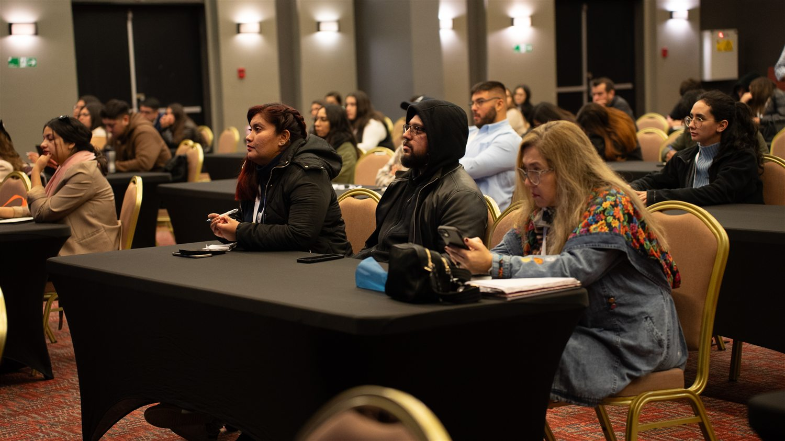

Lo que nos reúne
Dos días para actualizarse, compartir y construir redes reales.
El Congreso Veterinario Limarí convoca a médicos veterinarios, expositores y representantes de la industria para aprender desde una mirada cercana, práctica e inspiradora.
Las jornadas combinan charlas, pausas de networking, visita a stands y actividades que conectan el programa con la cultura y el paisaje del Valle del Limarí.
Organización
Dr. Matías Morovic · Dr. Rodrigo Barraza

Qué encontrarás
Una programación pensada más allá del escenario.
Charlas y casos
Bloques con profesionales invitados y espacios de aprendizaje durante ambas jornadas.
Networking
Coffee breaks, stands y un brunch de negocios para generar vínculos profesionales.
Experiencias del valle
Observatorio, elaboración y cata de pisco, con cupos sujetos a inscripción previa.
Celebración
Fiesta del Pisco, música y comunidad para cerrar una jornada bajo las estrellas.